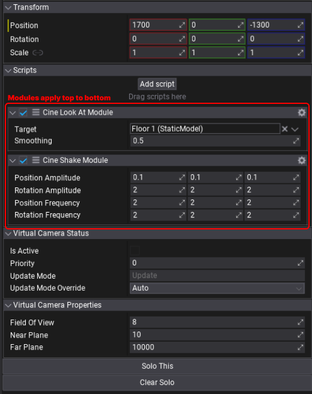

Principles and Overview
Introduction
Modular Virtual Camera systems, such as Cineblend or Unity's Cinemachine, provide an easy and flexible way to control cameras in games, movies, and interactive applications. Instead of manually animating cameras, switching between them, or writing complex logic, these systems let you define multiple Virtual Cameras with modular behaviours (like auto-framing, look-at, camera shake, offsets...) and smoothly transition between them.
Core Principles
1. Virtual Cameras
Virtual Cameras exist in the scene but act as proxies for the physical camera. Each Virtual Camera stores its own settings, including position, rotation, field of view, and modular behaviors. However, they do not directly render the scene. Instead, they pass their settings to the active physical camera, which then applies them. Virtual Cameras are switched based on priority or controlled via API commands.
2. Camera Blending
Instead of abruptly switching between cameras, modular systems allow smooth transitions using blending. This enables seamless transitions between different views, such as third-person, first-person, top-down, or multiple cinematic shots, without needing to create or reposition cameras manually.
3. Behaviours (Modules)
Cineblend and similar systems let you stack modular behaviors onto Virtual Cameras to create complex effects. These for instance include:
Look-At Tracking: Automatically rotates the camera to keep a target in focus. Camera Shake: Adds subtle movement to the camera, simulating being handheld or moved. Auto-Framing: Ensures multiple objects stay within the camera view by automatically rotating/zooming the camera.
These behaviors are applied sequentially and additively, allowing fine-tuned control over camera movement and composition.
